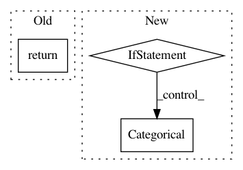

5a126fc7cac272dfe2514554ef228001c795d729,slm_lab/agent/algorithm/sac.py,SoftActorCritic,act,#SoftActorCritic#Any#,85
Before Change
return policy_util.random(state, self, self.body).cpu().squeeze().numpy()
else:
action = super().act(state)
return np.tanh(action) // continuous action bound
def calc_q(self, state, action, net=None):
"""Forward-pass to calculate the predicted state-action-value from q1_net."""
After Change
return policy_util.random(state, self, self.body).cpu().squeeze().numpy()
else:
action = self.action_policy(state, self, self.body)
if self.body.is_discrete:
// discrete output is RelaxedOneHotCategorical, need to sample to int. clamp to prevent minor precision issue with prob < 0
action = torch.distributions.Categorical(probs=action.clamp(min=0)).sample()
else:
action = torch.tanh(action) // continuous action bound
return action.cpu().squeeze().numpy()
def calc_q(self, state, action, net=None):
"""Forward-pass to calculate the predicted state-action-value from q1_net."""
In pattern: SUPERPATTERN
Frequency: 3
Non-data size: 3
Instances
Project Name: kengz/SLM-Lab
Commit Name: 5a126fc7cac272dfe2514554ef228001c795d729
Time: 2019-08-03
Author: kengzwl@gmail.com
File Name: slm_lab/agent/algorithm/sac.py
Class Name: SoftActorCritic
Method Name: act
Project Name: scikit-optimize/scikit-optimize
Commit Name: 7bd676c9ab6b23ec93499fd72aeadee3a334a163
Time: 2017-08-18
Author: betatim@gmail.com
File Name: skopt/utils.py
Class Name:
Method Name: normalize_dimensions
Project Name: dmnfarrell/pandastable
Commit Name: 9bf47c410efde68615d18265078e9cd317007103
Time: 2017-08-04
Author: farrell.damien@gmail.com
File Name: pandastable/plugins/mdanalysis.py
Class Name:
Method Name: feature_selection